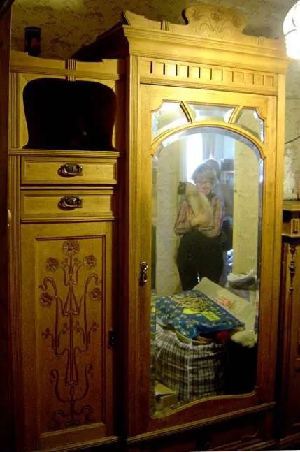
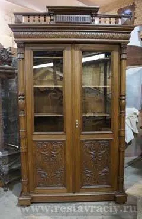
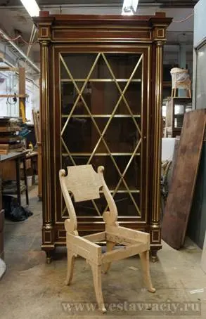
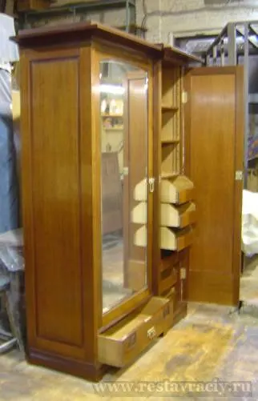
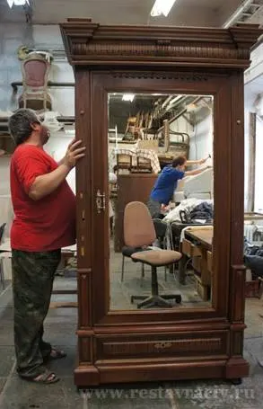
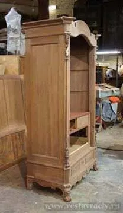
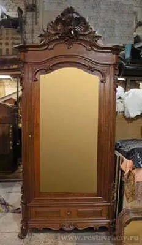
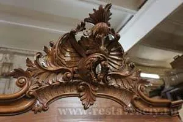
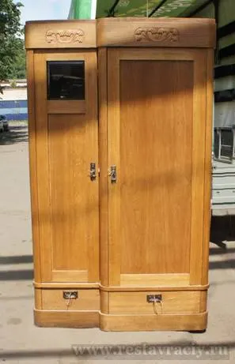
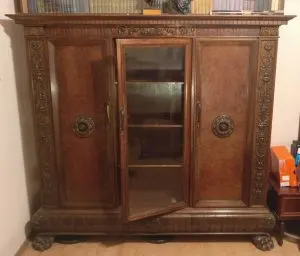

Мебель
Реставрация старинного шкафа
Этот шкаф многофункциональный, что характерно для конструктивизма 20-х годов.


О чём рассказывает мастерская
- Реставрация шкафа
- Как избавиться от запаха в шкафу
- Ремонт дверей шкафа
- Реставрация старого шкафа
- Шкаф платяной двухстворчатый
- Шкаф книжный немецкий
В материале мастерской
Фотографии и детали



Открыть снимок у мастерской


Открыть снимок у мастерской


Открыть снимок у мастерской


Открыть снимок у мастерской


Открыть снимок у мастерской


Открыть снимок у мастерской


Открыть снимок у мастерской


Открыть снимок у мастерской


Открыть снимок у мастерской
Посмотреть снимки с сайта мастерской 4
Оригинальные фотографии откроются здесь с сайта мастерской.
 Открыть снимок у мастерской
Открыть снимок у мастерской  Открыть снимок у мастерской
Открыть снимок у мастерской  Открыть снимок у мастерской
Открыть снимок у мастерской  Открыть снимок у мастерской
Открыть снимок у мастерской Есть похожая вещь?
Подберите ракурсы для предварительной оценки.